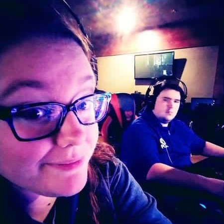
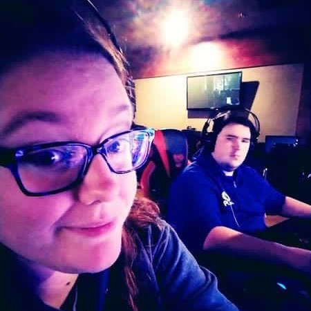

Web Developer
Hi! I'm Claudia. All my life I have been known for being "tech savy." Even though it's clearly obvious now what I want to be in my life, it was not so much growing up. In 2009, I wanted to be on Disney Channel. 2010, I was auditioning for American Idol, The X Factor, America's Got Tallent, and many more. 2011, I had my mind set on being in the film industry either writing, directing, acting, pruducing, it didn't matter what I was set out to do.
After I graduated high school in 2014, film school fell through, and I ended up working for McDonalds for what ended up being 4 years as a manager. I left to continue schooling, and began working for a screen printing factory. I discovered after working for two pretty good companies, that there's still room for improvement. I then began thinking of ideas to solve problems that were either costing the company money or time. The problem with my ideas, is no one wanted to put the effort into learning how to implement them, and I didn't have the knowlege to create them myself.
I left my second job after 3 years to pursue a degree in tech. I began my journey at Bryan University in a Full Stack Web Development program. My goal was to learn everything I could to create my ideas I've had for years. But here I am, with so many more ideas, so much more inspiration, and a knowlege I never thought I would be capable of having. It wasn't easy getting here. There were many unexpected obstacles I had to face.
When starting my classes, I had to put an end to a business I started in 2016, designing and producing T-Shirts for customers. I knew I needed to move my focus over to my future, and putting aside something I loved was very difficult. Two months into school, I was learning so much, I was bragging, showing off, every single project I made. On October 14th, 2020, my mother passed away. She was one of my biggest inspirations to follow my crazy dreams. I had a lot of big changes ahead of me; moving into the house, paying off bills, taking care of my sister who was just freshly 18. It's been a rough, challenging ride.
I continued through school. Continued learning more and more on how to be a better developer. It's almost been a year since my mom has passed away, and I know I'm going to continue to make it, because determination, and consistency, will 100% launch me into my future.
.JPG)
.JPG)
.JPG)
.JPG) 

“Be the change that you wish to see in the world.”